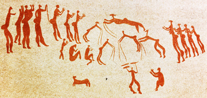
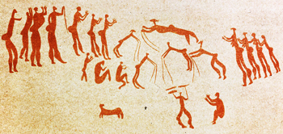

Frequently Asked Questions
Is Bika LIMS really free?
There are no license fees, the code base is achieved through the
foresight of clients who want to see their investment hardened.
Labs source services, configuration, training, support from their
preferred providers, in-house or contracted
foresight of clients who want to see their investment hardened.
Labs source services, configuration, training, support from their
preferred providers, in-house or contracted
Can we install Bika LIMS on our own servers?
Sure, onsite or server farm of your choice
What do we get?
Full ownership. Bika LIMS is Free and Open Source, users have full ownership and access to their
code, sans licence fees or vendor lock-in . Bika can be used by unlimited users
Where's the catch?
LIMS is complex and you'll likely require assistance with configuration and using it,
interfacing Instruments.We recommend taking out professional support for prioritised issues
How do we get better SEO visibility using Open Source?
Through participation on public forums and user groups indexed by search engines and hosting
Bika on your own domain. Sponsors of new features get big exposure, in the community and through
news Items and press releases
So is it any good?
Professional Open Source, POS, has become better than closed systems, for all its inherent
benefits unmatched in proprietary environments, inherent quality control in open repositories.
Only standardised code include unit tests and documentation is accepted and thoroughly tested by
community users
About the expensive Support
Use non disruptive text based tools to optimise capacity and budgets, a lot gets done per well
managed support hour and tasks resolved quicker
Which Hardware?
Best practice is a dedicated LIMS server running Debian or Ubuntu. Quad core i7, 64GB RAM, 2 *
248GB SSD in RAID. Thin browser-only workbench PCs. Zebra desktop label printers and Symbol
barcode scanners are robust and good value
 

Where can we save?
Most Bika and Senaite professionals do server installations at discounted prices in order to
grow the project. Big configurations can be done from spreadsheets. Instrument results files can
be converted to a generic format for import
Why are more labs not using Open Source LIMS?
Unfamiliarity - labs do not realise they can have tailor made industrial strength LIMS this
affordably. FUD - Fear, Uncertainty and Doubt, a disinformation strategy by proprietary business
How does Senaite relate to Bika LIMS?
Bika LIMS, 2002 to 2017, is the Senaite foundation. Bika 4 design focussed on performance and
maintainability became Senaite to resolve the naming issue of the project and founding company
both using the same title, unfair to other participants
Bika Lab Systems, Cape Town, contributes to Senaite, but the bulk originates in Europe today. With near 20 years invested, we maintain the Bika brand independently, providing add-ons to extend the generic Senaite base with functions extra to its lean performance driven scope
Bika Lab Systems, Cape Town, contributes to Senaite, but the bulk originates in Europe today. With near 20 years invested, we maintain the Bika brand independently, providing add-ons to extend the generic Senaite base with functions extra to its lean performance driven scope
What does ‘Bika’ mean?
Bika is an isiZulu word, pronounced ‘beekah’ and means ‘to report’ or more colloquially, ‘Tell
it as it is’, It was chosen in the ethnic heyday of Ubuntu Linux, replacing the eurocentric Bach
its foregoing prototype for wine laboratories
Ingosi ‘chief’ Bika 2 followed, and Gaob ‘king’ Bika 3. Gaob is from Khoi San Nama, language of
the world's first people